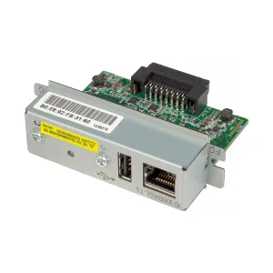

ROUTER MERCUSYS MW302R MULTI-MODE WIRELES
ROUTER MERCUSYS BY TP-LINK N300MBPS WIRELESS
ROUTER INALAMBRICO N 300MBPS TL-WR840N
ROUTER AC750 DOBLE BANDA 4 ANTENAS ARCHER C24
SWITCH MERCUSYS ESCRITORIO 5-PORT
SWITCH DE MESA CON 5 PUERTOS GIGABIT TL-SG1005D
SWITCH DE MESA CON 8 PUERTOS10-100-1000MBPS
SWITCH GIGABIT ESCRITORIO 8-PORT 10-100-1000MBPS
MFAX MODEM ASROCK HDMR 56.6KB INTERNO
ADAPTADOR INALAMBRICO PCI EXPRESS N 150MBPS TL-WN781ND
BRAZO ARTICULADO PARA MICROFONO
BRAZO ARTICULADO PARA MICROFONO